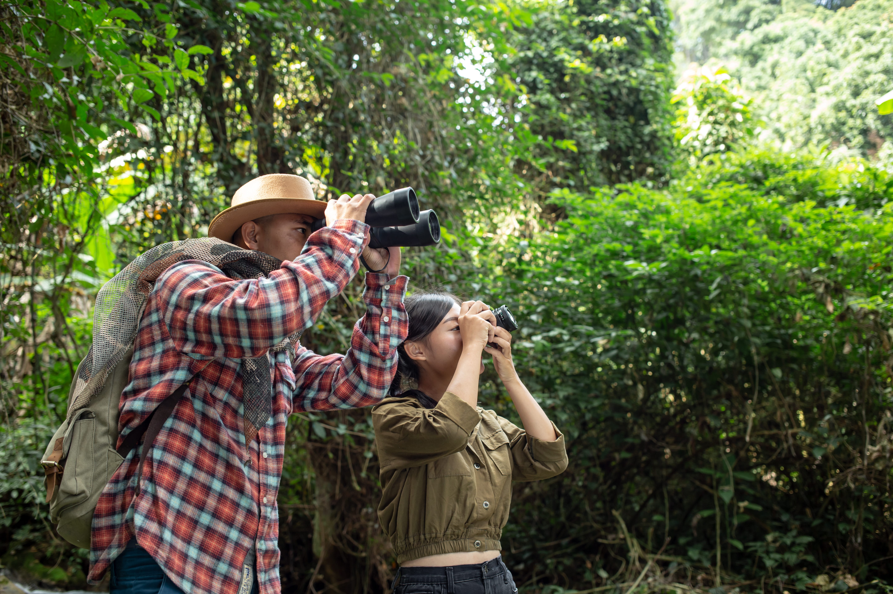
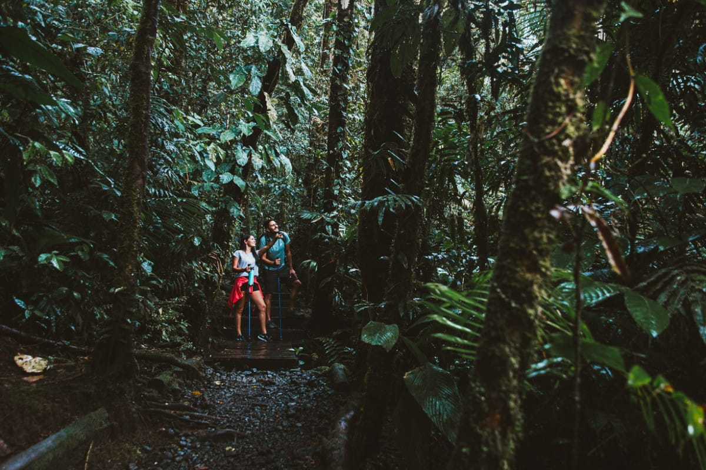

Tour de observación de aves
Despierta con la naturaleza en senderos de bosque nuboso. Experiencia guiada para observación responsable de aves locales de altura.
- Horario: 6:00 a.m.
- Duracion: 2 horas y media
- Dificultad: Moderada
Aventura responsable en Costa Rica
Ruta de montaña en Talamanca
Que hacer en San Gerardo de Dota

Despierta con la naturaleza en senderos de bosque nuboso. Experiencia guiada para observación responsable de aves locales de altura.

Conoce iniciativas de turismo comunitario, tradiciones rurales y proyectos de economía circular de familias de la zona de Dota.

Sumérgete en agua termal en medio del bosque de montaña y disfruta un circuito de relajación con enfoque de bienestar integral.

Ruta escénica con guia local para explorar senderos de altura, miradores y puntos de fotografia natural en Talamanca.

Noche sensorial con astronomia basica, relatos locales e infusiones de altura en ambiente seguro y de bajo impacto.

Recorrido por sistemas de energía limpia, manejo de agua, compostaje y programa de reforestación comunitaria.